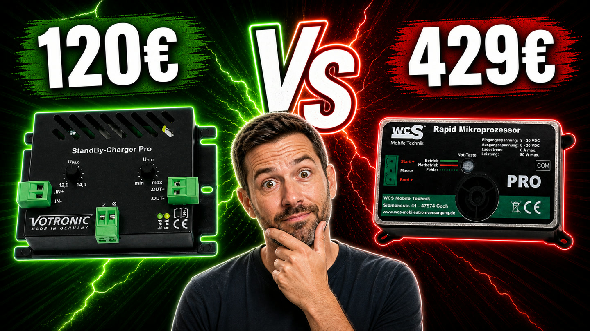
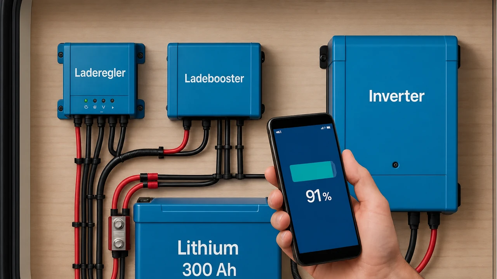
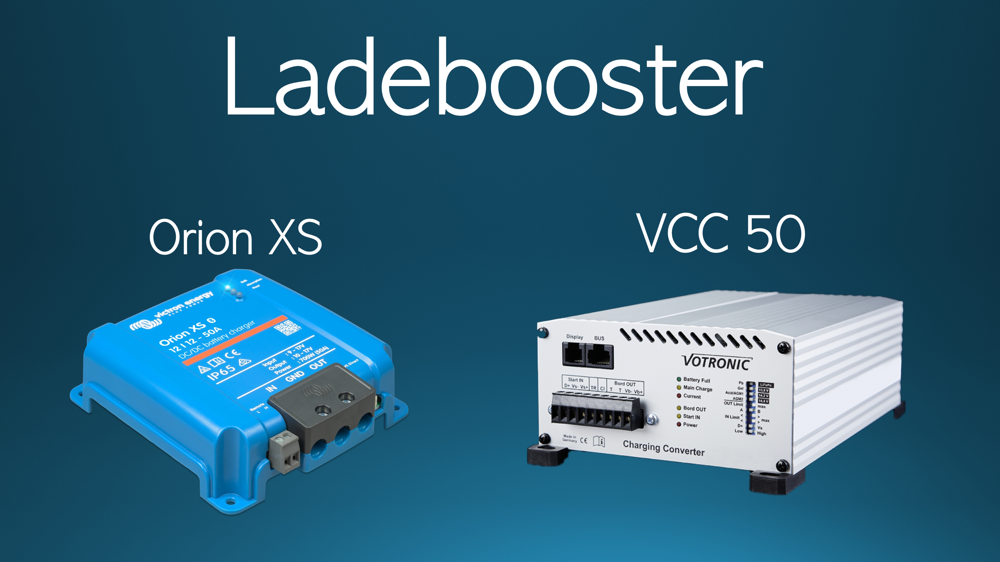

StandBy-Charger Pro vs. WCS Rapid
120 oder 429 Euro? Leistung, Kühlung, Einstellungen, Not-Taste und Victron Orion XS als mögliche Alternative.
Vergleich ansehenHier entstehen Beiträge zu typischen Ausbaustufen, Solaranlagen, LiFePO4-Batterien, Ladeboostern, Wechselrichtern und Planungsfragen: von der einfachen Basisversorgung bis zum grossen Autarkie-System.

Die Ratgeber erklären einzelne Komponenten und komplette Ausbaustufen. Du erfährst, worauf es bei Planung, Kabelquerschnitten, Sicherungen und Alltagstauglichkeit ankommt.

120 oder 429 Euro? Leistung, Kühlung, Einstellungen, Not-Taste und Victron Orion XS als mögliche Alternative.
Vergleich ansehen
SOC-Anzeige, BMS-Sperre oder Spannungsabfall? Mit Spannungswerten, Multimeter-Diagnose, Smart Battery Sense und SmartShunt.
Diagnose-Ratgeber ansehen
30 oder 50 A, Lichtmaschine, Trennrelais, Kabelquerschnitt, Sicherungen, D+, Schaltplan sowie Orion XS und Votronic VCC aus eigener Praxis.
Ladebooster-Ratgeber ansehen
Wohnmobil Solaranlage selber einbauen: 100 Ah LiFePO4, 150 W Solar, Ladebooster, Schaltplan-Orientierung, Materialliste und Kosten.
Beitrag zum Einbau ansehen
Mehr Solar für Stufe 1: 210-230 W Dachsolar, 160 W Solartasche, MPPT 75/15, MPPT 75/10, Parallelschaltung, Sperrdioden, Kosten und Materialliste.
Solar-Erweiterung ansehen
Mehr Autarkie mit 200 Ah LiFePO4, 310 W Dachsolar, 300 W Solartasche, Orion XS 50 A, zwei MPPT 100/20, 1500-W-Inverter, Kosten und Materialliste.
Autarkie-Stufe ansehen